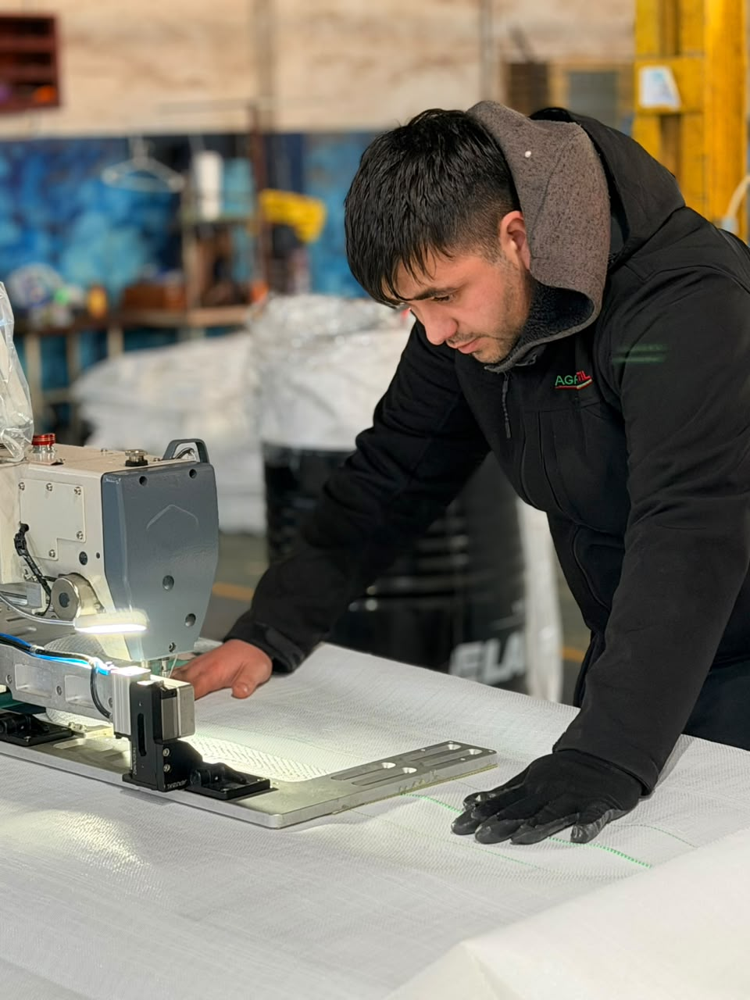

01 · LONAS Y COBERTURAS
Lonas para galpones avícolas
Opciones de cobertura para galpones de pollos. Consultanos por colores, medidas y disponibilidad.
Consultar por WhatsApp →AGROTEXTIL · CARMEN DE ARECO
Fabricamos y comercializamos productos para el trabajo agropecuario, con atención cercana y soluciones a medida.

Lonas y coberturas para galpones avícolas
PRODUCTOS DESTACADOS
Conocé algunas de nuestras opciones para el sector agropecuario.
Opciones de cobertura para galpones de pollos. Consultanos por colores, medidas y disponibilidad.
Consultar por WhatsApp →
Malla de 2,5 pulgadas · calibre 14,5
Consultanos por medidas y opciones para tu proyecto.
Consultar por WhatsApp →
Diferentes configuraciones de bolsones según el tipo de carga y descarga requerido.
Consultar por WhatsApp →QUIÉNES SOMOS
En AgroTextil contamos con más de 20 años de experiencia en el rubro agropecuario. Trabajamos desde Carmen de Areco, Buenos Aires, fabricando tejidos, bolsones Big Bag, lonas y coberturas para galpones avícolas.
Atendemos a granjas, distribuidores y particulares. También realizamos productos a medida, adaptando sus dimensiones y características a cada proyecto.
Contactanos

TRABAJÁ CON NOSOTROS
Dejanos tus datos y adjuntá tu CV. Vamos a recibir tu postulación en nuestro correo.
Podés adjuntar tu CV en formato PDF, DOC o DOCX. Tamaño máximo: 10 MB.
ESTAMOS PARA AYUDARTE
Elegí el canal que prefieras para consultarnos o pedir un presupuesto.